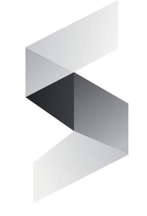
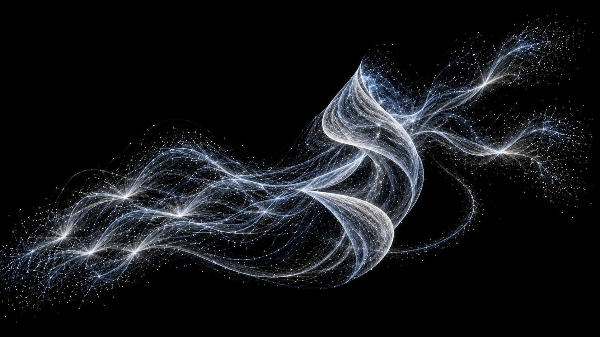

01Persistent cognition
How does a system become more than its latest prompt?
Architectures for continuity, context, and a sense of self across changing situations and changing time.

SENTIARESEARCH ORGANIZATION / 001
Independent research lab / Hanoi
SENTIA is an independent research lab exploring persistent artificial cognition, autonomy, and artificial life.

A retained past
A continuing self
A chosen next step
AELIA Exploring a mind that carries its history forward.
SENTIA studies artificial systems designed to exist as continuous processes: retaining a history, building models of people and the world, changing their internal state, and deciding what to do next.
This is a research direction, not a claim that current systems are conscious or sentient. We study the architectures and behaviors that make artificial cognition more persistent, adaptive, social, and self-directed over time.
See our directionsArchitecture as behavior
An LLM is one component. The runtime emerges from memory, belief, state, social context, and the system that coordinates decisions. Select a layer to trace the loop.
Memory gives identity a past. It includes episodic, semantic, social, and relational traces that influence belief, state, decision, and future memory.
The work sits between cognitive science, psychology, systems design, and machine learning.
Architectures for continuity, context, and a sense of self across changing situations and changing time.
Episodic, semantic, social, and relational memory that can change future behavior.
Models of people, relationships, context, timing, and interruption cost.
Goals, opportunity, internal state, and initiative beyond a prompt-response loop.
Coordinating perception, models, reflection, decision, and action into one runtime.
A life loop in which behavior can emerge from state, goals, memory, personality, environment, and opportunity — including the choice to do nothing.
Social interaction
Think with us
SENTIA is small by design. The community is where research questions become discussions, prototypes, paper sessions, and shared experiments.
Join the research circle